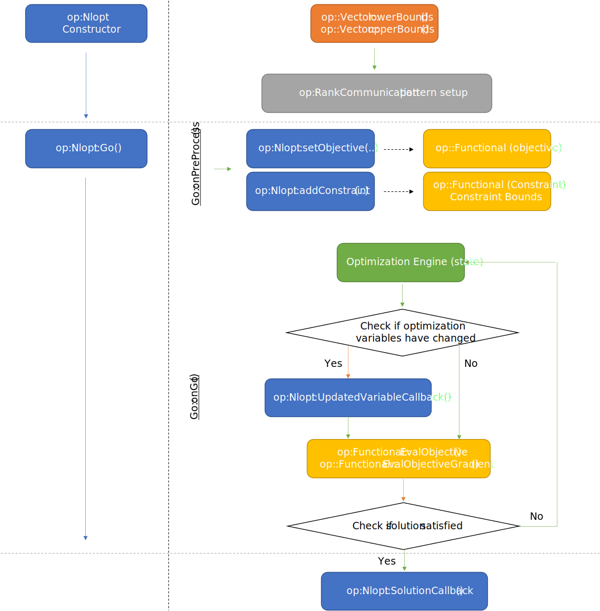
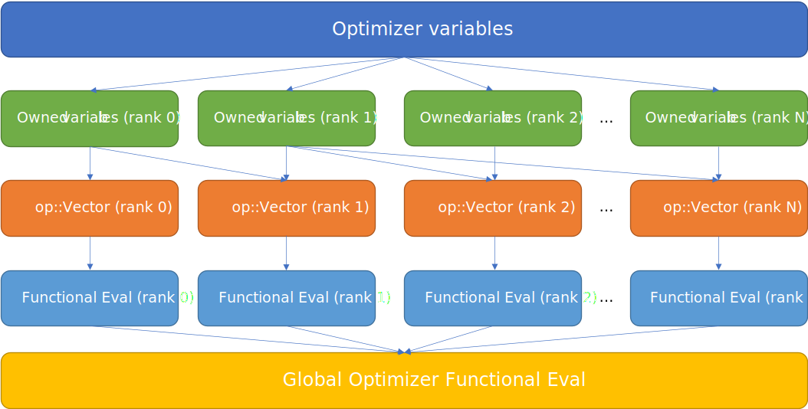
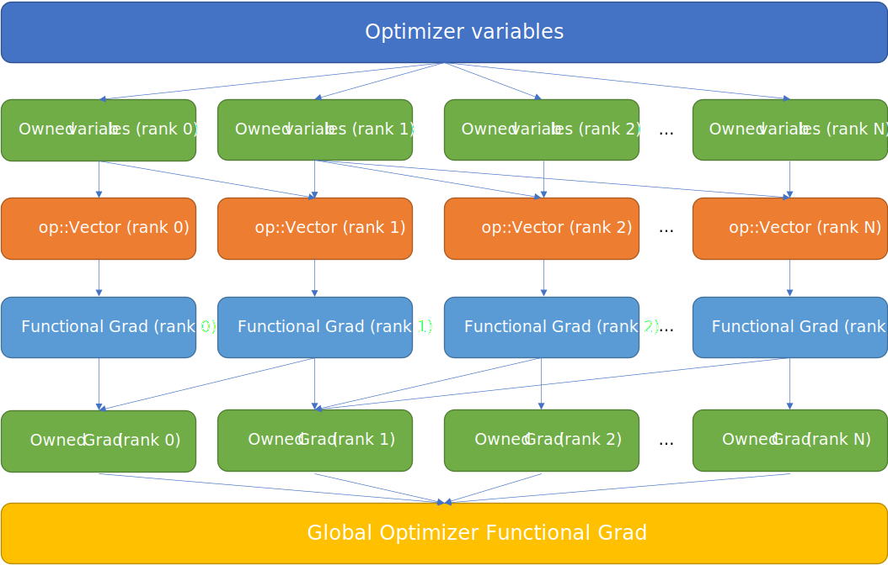
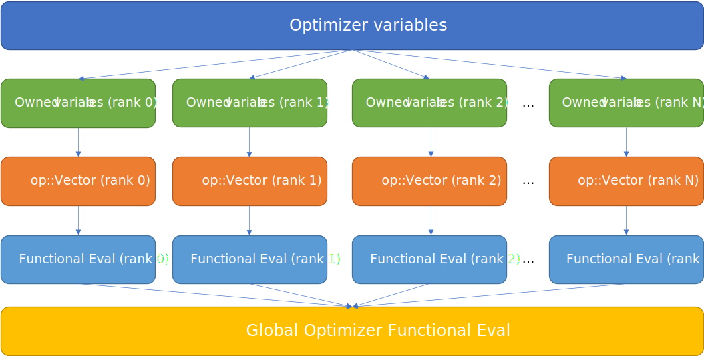
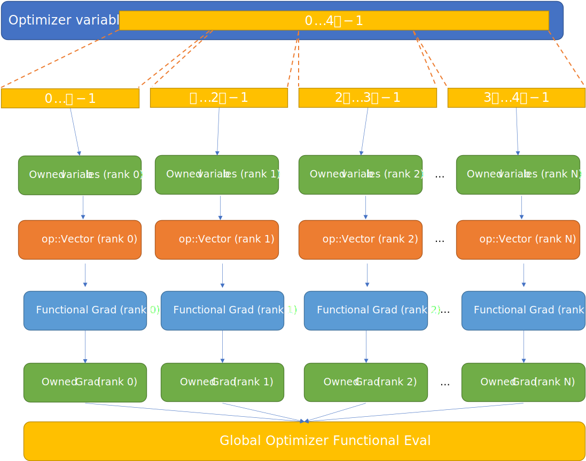
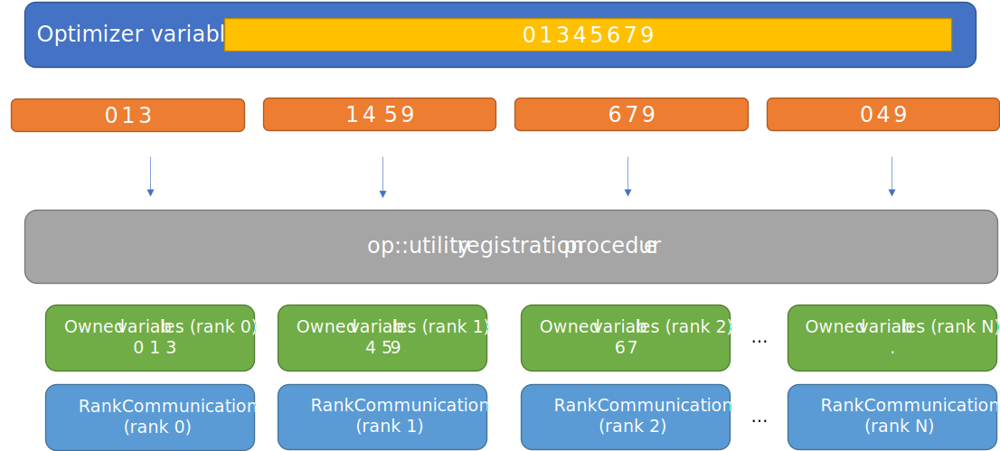
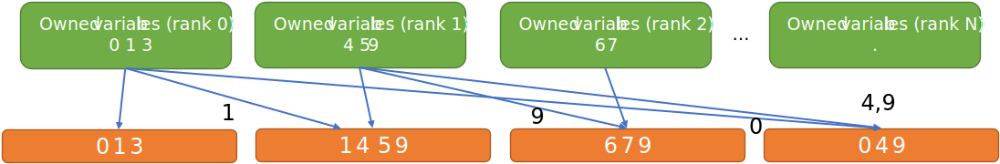
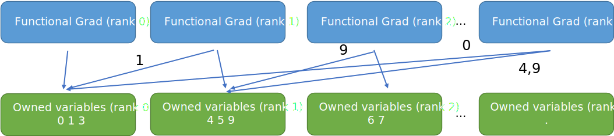

Core Optimizer Abstractions¶
Overview of Optimizer Abstractions¶
op provides several core optimizer abstractions to provide optimizer “interoperability” and facilitate transioning between different optimizers. These abstractions are lightweight wrappers over both data and optimization operations/functionals and do not “own” any data.
The following abstractions are used to define optimization problems:
op::Vectorop::Functionalop::Optimizer
To try to keep things consistent and ease transition between serial and parallel problems, the op interface is designed to work on rank-local views of each of the abstractions. The op api then provides a suite of convenience methods to generalize transfers whether the problem is serial or parallel based on the rank-local paradigm. Thus, in addition to the core optimizer abstractions, the op framework has a data flow model for parallel optimization problems that abstracts away many complications related to MPI data exchange for optimization problems. A op::utility and op::mpi namespace is also provided for convenience to simplify custom parallel implementation based on provided patterns.
Vector¶
The Vector abstraction wraps an optimization variable vector. C++ functions to compute the lower and upper bounds of the data must be provided on construction.
Functional¶
The Functional abstraction can be used to wrap the objective of an optimization problem or constraints. To construct a Functional, one needs to provide a function that computes a double from optimization variables, and also the gradient of this function w.r.t. optimization variables. In addition, lower and upper bounds on the evaluation of the function can be provided.
Conversion wrappers for Functional¶
The following conversion wrappers are provided for specific optimizers.
Optimizer |
to Optimizer-abstraction |
to op-abstraction |
nlopt |
NLoptFunctional |
wrapNLoptFunc |
MPI-parallel Functional operation patterns¶
The following methods are provided to make it easier to compose ``Functional``s that in MPI parallel optimization problems.
ReduceObjectiveFunction- Takes in a rank-local function evaluation and applies a MPI_Op over the specified communicator.OwnedLocalObjectiveGradientFunction- Computes gradient of “owned” variables over the specified communicator.
Optimizer¶
The purpose of the Optimizer abstraction is to generically wrap optimization solvers and provide a standardized interface. A series of callbacks is defined (stubbed) by default and different optimizers and users can customize the solver to fit their needs.
Every Optimizer has the following generic problem description interface:
setObjective- which sets a Functional as the objective for the optimization problemaddConstraint- which adds a new cosntraint Functional
Every Optimizer provides several callbacks to control optimization flow.
Go()which calls the internal user-definablegofunction. By default, an implementation of this callback should start the optimization problem, and assume objectives, constraints, and other problem information is provided. TypicallysetObjectiveandaddConstraintare called in a user-defined function. CallingOptimizer::Go()starts the optimization problem.UpdatedVariableCallback()which calls the internal user-definableupdatefunction. This is called whenver the optimizer implementation updates the design variables. In the case of topology optimization, one might compute forward and adjoint solves in the callback.Solution()returns the final global objective result.Iteration()is a callback cooresponding to theiterateuser-definable function. This is called at every optimization iteration.SaveState()is a callback corresponding to thesaveuser-definable function. This is used for saving the state of an optimization for possible restart.
The following control diagram illustrates how the different callbacks and methods in the op core abstractions interface might be called in an general optimization problem.
Optimization Control-flow Model¶
Before we delve into the data-flow model which allows us to use serial optimizers with parallel simulation and design capabilities, the overall control flow model in op will be discussed. The control-flow diagram below uses op::NLopt as an example in how the different core abstractions and their callbacks interact.
The left-side of the figure illustrates user calls, while the right-side details the underlying callbacks and decisions being made amongst the different core abstractions.
{kind=link}
During construction of the optimizer, the size and labelling of op::Vector is used to gather global problem information, determine the bounds of the optimization variables and also determine possible communication patterns between the MPI ranks.
Next the user-defined pre-process phase allows the user to add objectives and constraints and other optimization setup details.
Lastly, the final phase is where the underlying optimization solver starts optimizing the problem. Generally speaking, the optimizer can be treated as a “black box” where the optimizer tells our op-Optimizer wrapper what state it’s in. Using the op api, one can generalize the control flow for different data flow patterns relatively easily.
In the case of op::Nlopt it isn’t clear that the optimization variales have been changed, so that is checked first. If the variables have changed, we update the variables on each rank and then the UpdateVariableCallback() is initiated on each rank.
Once the variables are up-to-date, we use op::Functional to compute the objectives and gradients. (Note: if the variables are up-to-date, it is guaranteed that UpdatedVariableCallback() has been called except in the initialization case for the optimizer) These results are then sent off to the optimizer.
This process continuse in a loop until the optimization metrics have been satisified in finding a solution or there is an error. When the solution has been reached SolutionCallback() is initiated.
Optimization Data-flow Model¶
The op framework assumes the following general data flow model. There is a concept of optimization variables being “owned” by a particular rank. Namely, these ranks are soley responsible for transfering and reducing data and interact with the optimizer. Ranks that do not “own” any variables still participate in evaluating functionals and functional gradients, but those ranks do not interact directly with optimizers.
While users are free to assign which ranks own which variables, op::utility provides methods for self-registration of “owned” variables. Each rank broadcasts an identifier (global id) for each variable corresponding to op::Vector. The lowest rank which conatins this identifier is the “owner” of this variable. op::utility builds local mappings for all ranks according to a particular identifer set and op::utility::Rankcommunication struct is used to organize which variables must be sent to the owning rank, and also variables that will be sent to rank-owned variables.
The general data flow to calculate an particular optimization objective/constraint is shown below:
{kind=link}
Above we first see the optimization variables representation coming from the op::Optimizer. Each op::Optimizer should operate on “owned” variables. Currently the user is responsible for obtaining “owned” data; op::utility provides some methods of doing this for users. The data is then propagated (op::utlity methods) back to op::Vector which is a rank-local view of optimization variables. The functional is evaluated in a rank-local manner. The functional is then reduced to the final global optimizer functional result. All op::Optimizers expect the final global functional result (objective or constraint) to be returned when evaluating the functionals.
The general data flow to calculate a particular optimization objective/constraint gradient is shown below:
{kind=link}
It’s similar to the data flow for evaluating the optimzation functionals. The main difference is that local functional gradient evaluation contributions are first propagated back to “owned” ranks. The ranks which “own” those portions of the gradient then propagate the gradient back to the optimizer.
Simple Example¶
A common data flow model for optimization problems run in parallel is where every rank has a unique set of optimization variables and ranks do not share contributions to a particular optimization variable. This is shown below:
{kind=link}
In this case, every rank already “owns” their variables, in which case there is no difference between “owned” variables and rank-local views; they are the same.
Take the following example. Given optimization variables indexed from 0-4p, if this optimization is performed on 4 processors, the first p-optimization variables can be given to the first rank and so on.
{kind=link}
Advanced Example¶
To demonstrate the generality of the data flow model, we’ll look at an advanced example. Here we have 8 optimization variables spread over 4 ranks. The first rank owns optimization variables labelled 0 1 3 and so on. The user is responsible (using op::utility methods) to propagate the optimization variables from “owned” variables per rank to rank-local views (orange). Then we evaluate the gradient on every rank. Lastly we reduce to “owned” ranks (using op::utility methods) and we return the “owned” portions of the gradient to the optimizer.
{kind=link}
Note
One should be careful to delineate differences between index and label. In op, index refers to an offset within an array. On the other hand, label or id , is an identifier and need not be contigious or necessarily “bounded”. In the “simple” data-flow model, the local optimization variables are implicitly labelled with a unique offset that corresponds to (rank, local_index) in a Column-sparse row storage format (CSR). This implicit labelling is consistent with other conventional configurations of optimization solvers (e.g. ipopt).
However, for the “Advanced” example, labels are used to “mark” relations between ranks. Therefore one may need not only maps to go to and from simulation quantities to labels, but also to and from labels to the actual rank-local optimization variable index values.
To generate the dashed orange lines, we might employ an initial registration procedure that will tell each rank what variables it “owns” as well as the inter-rank communicator mappings that define the blue arrow communication pattern to local variables.
{kind=link}
The following lines of code use op::utility methods to generate the pattern in this advanced example.
// dvs_on_rank is the map (orange).
// rank 0 (dvs_on_rank[] = {0 ,1, 3})
// rank 1 (dvs_on_rank[] = {1, 4, 5, 9})
// gather global variable information
auto [global_size, variables_per_rank] = op::utility::parallel::gatherVariablesPerRank<int>(dvs_on_rank.size());
// Form labels and give to everyone
// all_global_labels[] = {0,1,3,1,4,5,9,6,7,9,0,4,9}
auto all_global_labels =
op::utility::parallel::concatGlobalVector(global_size, variables_per_rank, dvs_on_rank);
// create unordered map to use with generateSendRecievePerRank
auto global_ids_to_local = op::utility::inverseMap(dvs_on_rank);
// generate the rank-local RankCommunication data structure for dvs_on_rank-indexing on each rank in parallel
auto recv_send_info =
op::utility::parallel::generateSendRecievePerRank(global_ids_to_local, all_global_labels, offsets);
// filter out entries that correspond to send to get our local variables that we own
auto owned_dvs_on_rank = op::utility::filterOut(dvs_on_rank, recv_send_info.send);
Since this is an expected pattern, op provides an implementation of this for users to simplify the process (op::AdvancedRegistration(...)). Users supply the global id labeling of each optimization variable in op::Vector.
Warning
It is important that the ordering of the variables be set before the call to op::AdvancedRegistration(...). The pattern above assumes that the labeling of the global ids corresponds to op::Vector and to the entries in the gradients of `op::Functional`s.
Example:
/** Registration **/
auto comm_pattern = op::AdvancedRegistration(global_ids_on_rank);
where CommPattern contains the following information.
template <typename T>
struct CommPattern {
op::utility::RankCommunication<T> rank_communication;
T owned_variable_list;
T local_variable_list;
};
After the initial registration procedure, we can go from “owned” local variables to local variable views using the following code.
{kind=link}
// owned_updated values should be provided by the optimizer
auto updated_local_variables =
op::ReturnLocalUpdatedVariables(recv_send_info, global_ids_to_local, owned_updated_values);
In op::NLopt this is performed automatically whenever the optimization variables change and before the call to UpdatedVariableCallback() so that the user’s view can be consistently rank-local.
Convenience functions are available in op to help with global objective evaluations can.
{kind=link}
// When calculating the objective, every rank calculates it's local objective
auto local_obj = [](const std::vector<double>& local_variables) {
double sum = 0;
...
return sum;
};
// apply a reduction pattern to the local_objective function
auto global_obj = op::ReduceObjectiveFunction<double, std::vector<double>>(local_obj, MPI_SUM);
Another convenience function is available to help evaluate a gradient locally and then reduce the gradient on ranks that own variables.
{kind=link}
// For the gradients things get more interesting
// First compute the local_obj_gradient from this rank
auto local_obj_grad = [](const std::vector<double>& local_variables) {
std::vector<double> grad(local_variables.size());
...
return grad;
};
// We want to determine the local gradient that corresponds to "owned" variables
auto reduced_local_obj_grad =
op::OwnedLocalObjectiveGradientFunction(recv_send_info, global_ids_to_local,
local_obj_grad,
op::utility::reductions::sumOfCollection<std::vector<double>>);